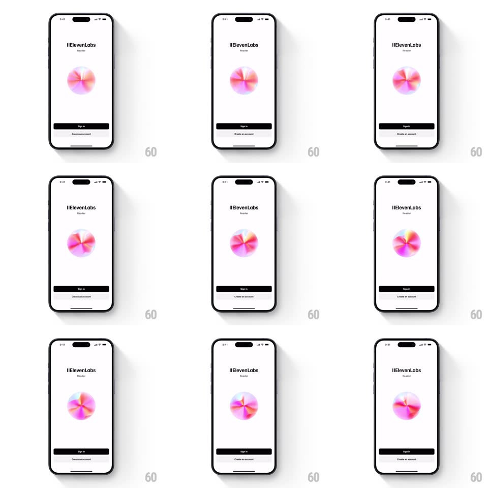

Media
Frame-by-frame

Rebuild this animation 1:1: ElevenLabs Reader's splash - a white screen where an iridescent sphere slowly rotates, its internal gradients swirling like a lava lamp, above Sign in.

Rebuild this animation 1:1: ElevenLabs Reader's splash - a white screen where an iridescent sphere slowly rotates, its internal gradients swirling like a lava lamp, above Sign in. ## Integration Integration: stack-agnostic spec - springs given as stiffness/damping, timed motions as duration + curve; map every value to your framework and animation library of choice. ## Scene A minimal white splash: "ElevenLabs" wordmark with "Reader" subtitle, a centered iridescent sphere (pink, orange, and blue-violet gradients swirling inside a soft orb), a black "Sign in" button and "Create an account" link at the bottom. ## Motion spec Pattern: ambient morphing iridescent sphere. - The sphere rotates continuously (1 revolution per ~12s) while 3-4 internal color blobs (pink, coral, violet, blue) drift and morph inside it (each blob on its own 6-9s sinusoidal path, radius +-15% of the sphere), blending with screen-like mixing so colors bleed into each other. - The sphere's silhouette stays perfectly circular; a soft outer glow (20px, 15% opacity) shifts hue with the dominant internal color. - Occasional specular sweep: a highlight band crosses the sphere (every ~5s, 800ms transit) as if light passed over glass. - Wordmark, buttons, and background are completely static - the sphere is the only motion. - On sign-in tap, the sphere scales up slightly (1 to 1.06, spring ~300/20) and the screen transitions. ## Calibration - Motion is ambient: nothing completes a visible "cycle" faster than ~5s; the sphere should feel alive, not busy. - Colors stay pastel-saturated; never let blobs muddy into gray where they overlap. ## Reduced motion Static sphere with the gradient frozen mid-blend. ## Don't miss - The blobs move INSIDE a fixed circular mask - the sphere never deforms. - Keep the rest of the screen stark white; the sphere carries all the color.